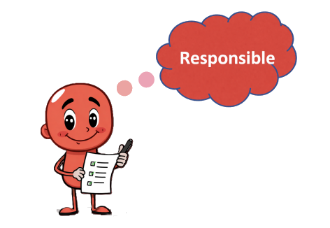
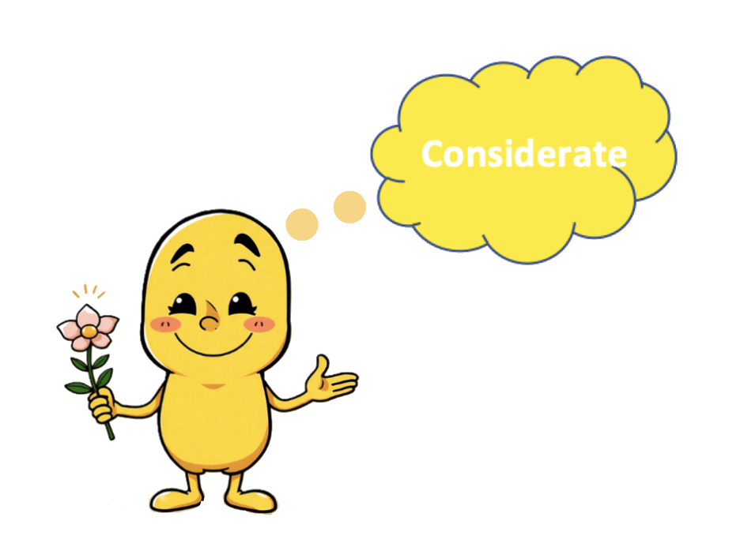
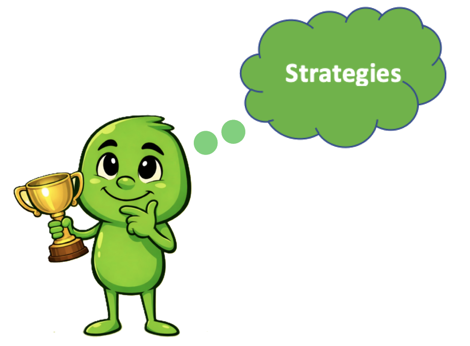

My goal is to put forth more effort to improve my self-management skills.

My goal is to motivate myself in the spirit of teamwork to better my relationship with others.

I am committed to setting well-defined and realistic goals that demonstrate my personal learning style.